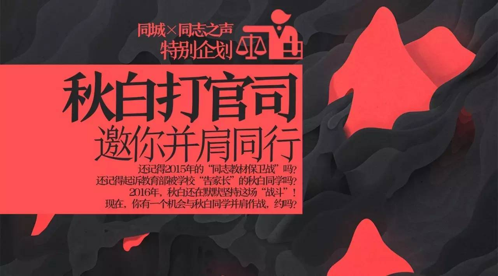
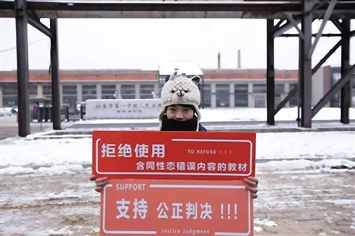
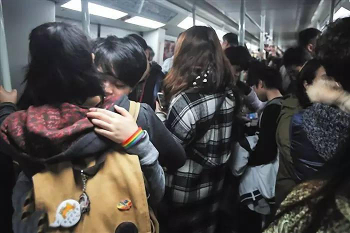
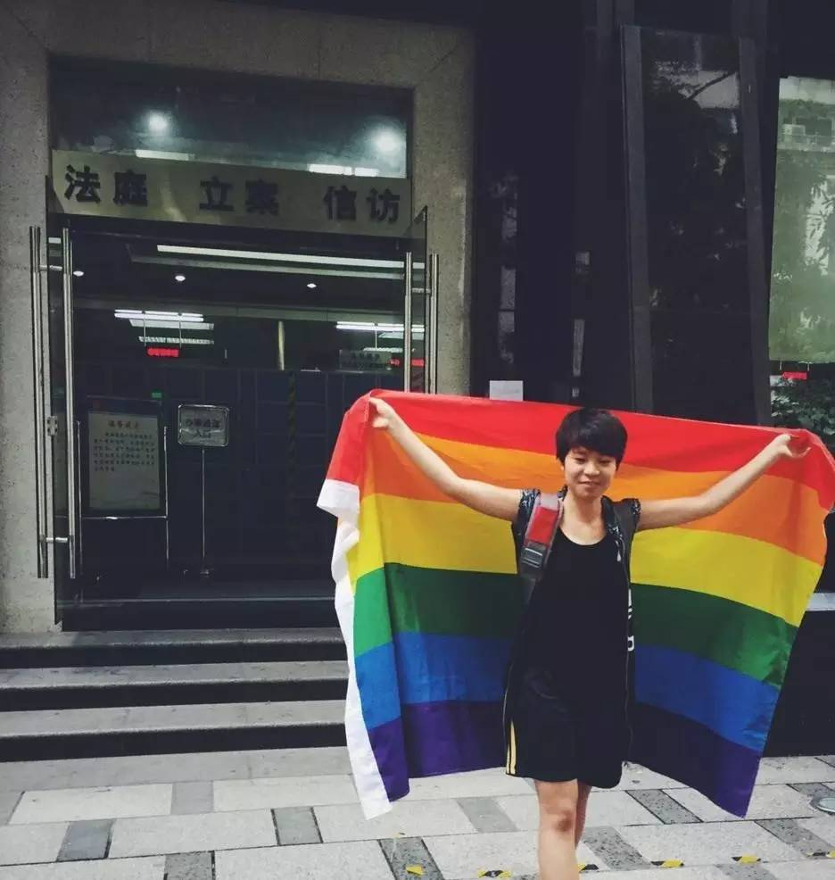
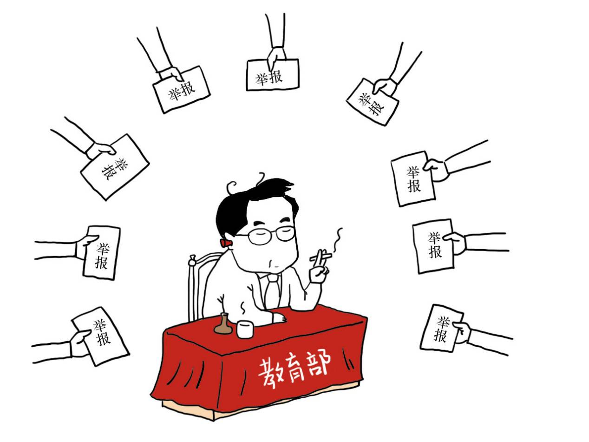
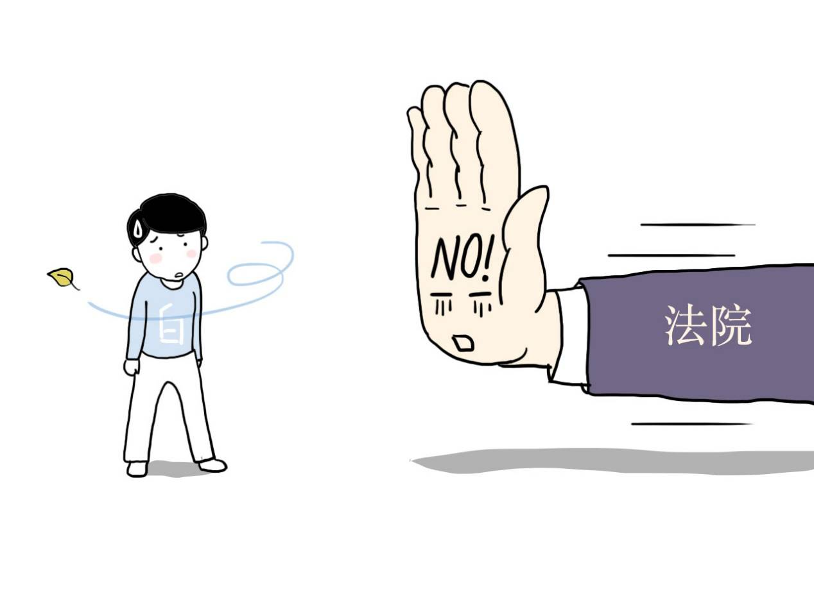
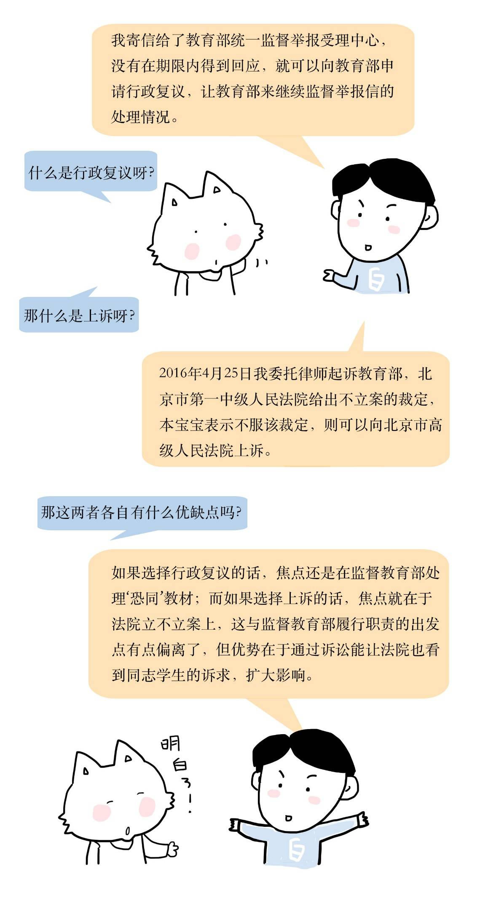
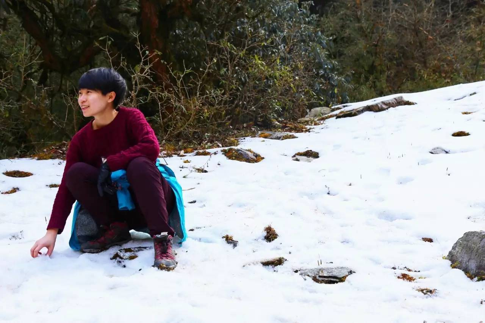
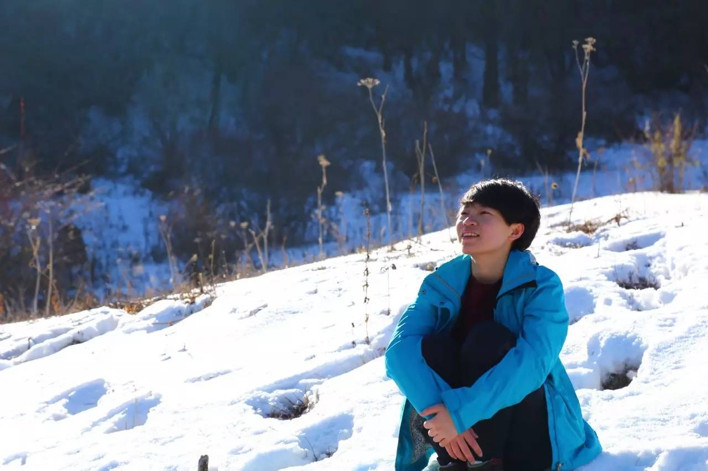

秋白打官司，邀你并肩同行！
以下文章来源于同志之声 ，作者秋白
「同志之声」是中国内地领先的同志非营利媒体和义工组织，始于2009年。我们致力以更科学、健康的角度推动公众对性少数群体的了解与认同。在这里，我们以公益为本，带来立场鲜明、排版养眼的优质内容，为读者提供有见地、有价值、有帮助的同志资讯。

文/ 秋白 图/ 子乐

•• 还记得2015年的“教材保卫战”吗？
•• 还记得起诉教育部被学校“告家长”的秋白同学吗？


大家好！我是秋白。2016年，我还在默默无闻地坚持这场“战斗”，1-2月份时，我给教育部寄“恐同”教材的举报信，得不到回应；在刚过去的4月里，我再诉教育部，却得到不立案的答复。
两头碰壁后，秋白宝宝现在遇到瓶颈了：接下来我该向教育部申请复议，还是不服法院不立案的判决申请上诉呢？
该如何奔跑维权？
下一步，不如一起来创造吧！
• • • • • • • • • • • •

 不了解“秋白起诉教育部”详情的朋友请移步至
不了解“秋白起诉教育部”详情的朋友请移步至
《中大女生诉教育部“教材歧视同性恋”，学校否认以不毕业施压》
http://m.thepaper.cn/newsDetail_forward_1366994?from=singlemessage&isappinstalled=0
↑
手动复制粘贴打开链接
－来自：澎湃新闻－
• • • • • • • • • • • •
号称“首次对话”，后续咋样啦？
2015年11月24日，诉教育部的案子在北京市第一中级人民法院开庭，那是我第一次见到教育部官员，与他们谈教科书恐同的问题，也是第一次将性少数学生的诉求当面反映给教育部，那天的心情那个激动呀。
虽然当问及教育部对错误教材有何处理措施时，对方要么说不清楚要么不知道，但在我及其律师的坚持下，教育部官员在庭审结束后通过电话告知我们，可以将书面投诉邮寄到教育部统一监督举报受理中心，然后教育部将会按照举报监督机制来处理。
起诉教育部的初衷，其实也不是抱着胜诉的希望而去，因为哪怕胜诉，也不意味着恐同教材得到解决。而是希望能够通过起诉，让教育部看见问题，进而提供可靠的举报途径。于是在2015年12月底我已向法院提出撤诉的申请并得到法院准许。
• • • • • • • • • • • •


Ｔ_Ｔ
举报信屡屡被退！
从起诉到撤诉，只为能够平等对话。
于是在撤诉后，我与全国各地共八十多位小伙伴纷纷到图书馆、书店寻找“恐同”教材，拍照，加批注，写举报信，最后邮寄。
出乎意料的是，我寄出的举报信以”查无此单位“为由而被退回，我没有轻易放弃，继续把被退回的信件重新寄出，然而仍被以同样的理由退回。当初一起寄出举报信的其他八十多位同学，ta们的信件均被成功签收，这让我更加百思不得其解。
可既然是教育部官员提供的举报途径，不可能出错的吧，也许是哪个环节弄错了呢。我继续寄信，反反复复，一直坚持到今年2月底信件才被成功签收。
在这期间，我还接到过教育部政策法规司一位工作人员的电话，他在电话里头说道，“这个举报比较特别，不能给予书面回复，也没有关于这类举报的处理机制”。至于为什么特别，为什么不能给予书面回复，对方含糊其辞，很快就挂了电话。之后多次回拨，均处于无人接听或忙音状态，举报信的事情似乎又要石沉大海，其实不过是想反映一下问题，想得到明确的处理结果，想不到征途遥遥无期。哭/(ㄒoㄒ)/~~

• • • • • • • • • • • •
无奈再诉教育部
不！立！案！
（what?）
寻找一次平等对话的机会如此艰难，作为学子发出自己的声音，却遭遇对方不理睬的态度，无奈之下，我实在忍不住，决定再次起诉教育部。
2016年4月25日，我委托律师在北京市第一中级人民法院提起对教育部举报信件不回复的行政诉讼。当天法院告知我们，该案件需合议后决定，将会在七天内给予回复。既然已经坚持到这一步，那不差多等几天吧。于是我等呀等，盼呀盼，七天期限总算到了，结果法院说：不立案，该事法院管不了。
法院如此潦草的判决，让我在炎热的南方五月天里感受到冰冷的现实。
一方面寄举报信屡屡被退，再诉教育部遭遇碰壁，法院说他们管不了这事/(ㄒoㄒ)/~~，而另一方面恐同教材依旧泛滥在校园，我的公众号及微博平台经常收到各地学生的曝光“毒”教材私信。其实我心里很是纳闷，这些曝光“毒”教材的私信应该是投诉到教育部门那里的去呀，但现在统统跑到我的收件箱里了，而且我还主动向教育部、法院反映情况，却碰了一鼻子灰。
• • • • • • • • • • • •
下一步行动
由你来决定
该继续坚持下去呢还是不了了之？如果选择不了了之，这些教材会继续“祸害”师生，我们只能默默承受充满歧视的校园环境；如果选择坚持下去，那接下来我还可以怎么做呀，是选择向北京高级法院上诉，还是选择向教育部申请行政复议?
What？不懂什么是行政复议，什么是上诉，快来看看下图恶补法律知识！争做二十一世纪知法懂法守法的好公民！

行政复议还是上诉好呢，按照法律规定来讲只能选择其中一个，秋白宝宝好纠结不知如何是好。过去五个月来，秋宝宝在教材上一直死磕，到处碰壁，碰出内伤，脑子越来越不灵光了，现在请各位投票来帮秋白做个选择，一起为教科书去污名出主意好不/(ㄒoㄒ)/~~
因上诉和申请复议是有法定期限的，所以投票时间到2016年5月10日中午12点就截止了，之后便根据大家的建议，下周抓紧行动，会在“秋白的自由野”微信平台上发布最新行动进展。
－长按本二维码识别－
参与投票
在此跪谢
• • • • • • • • • • • •
阿声偷偷附赠秋白同学的美照～
温暖你心！

